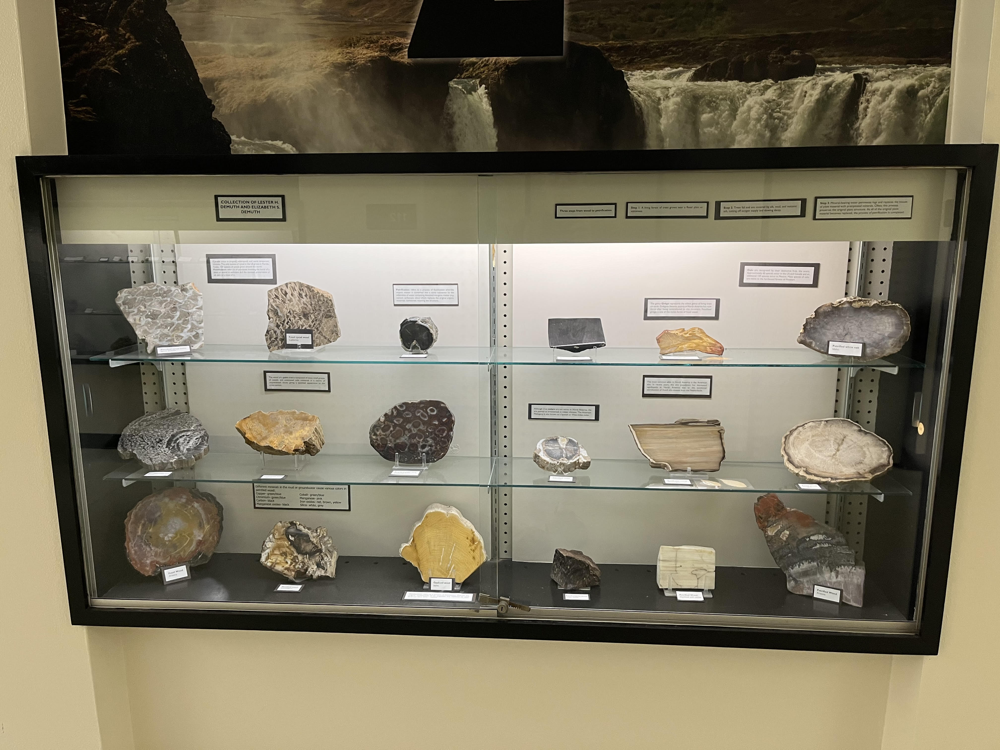

Science and Technology Exhibits Around Columbia
The best path to see all of the displays on campus in one visit is:
- Geology Building
- Lafferre Hall
- Art & Archaeology Museum
- Anthropology Museum
- Enns Entomology Museum
- Game Animal Display
- Physics Building
Department of Geology Display
Address:
Dozens of geologic specimens on display in the hallway on the first floor and basement.
Lafferre Hall
Address:
Engines on the first floor, chemistry instruments display on second floor.
Mizzou Botanic Garden
Throughout campus
Great Tree Trails
Museum of Art & Archaeology and Museum of Anthropology
Unfortunately, these museums are closed for renovation currently.
Enns Entomology Museum
Address:
There is a display of mounted insects as well as a few live insects to see.
Natural Resources Building
Laws Observatory
Physics Building
On the University of Missouri Campus
Geologic Specimens Display
Department of Geology Building
There is a large collection of geological specimens including rocks, minerals and fossils in the hallway on the first
floor and the basement. The basement contains some large fossils that don't fit in a case.
On one hand, it's just rocks. But this is a pretty nice display. It's in the hallway where it's easy to get to without
feeling like you don't belong. Each specimen is labeled and the cases are well-lit. Each individual rock is a little underwhelming by itself. Although there are some nice fossils that really are interesting to
see. There are also some mineral specimens that are really nice by themselves. But the size of the display makes this well-worth seeing. At the end
of the hallway in the basement (by the stairs) is a display of fluoresent minerals which was cool when it worked, but last time I checked, it didn't.


Engines
Lafferre Hall
Two engines are on display in the basement. One is a reverse thruster from a NASA Space Shuttle Trainer and the other
is a turbojet engine with afterburner from a T-38N aircraft used in NASA astronaut training.
These are tucked away in a corner. They are easily accessed and they have some labels identifying them. They have the
cool feel of being a part of NASA history, being big, and being powerful. But, they also kind of sit there quietly out of the way.

Chemistry Equipment
Lafferre Hall
There are actually two displays, one in a cabinet on the north wall and the other mounted on the south wall.
Perhaps the least loved displays on campus. Not lit. Not labeled. OK to look at if you happen to be in the building, or
you just want to check it off your list of everything.
Mizzou Botanic Garden Tree Trails
Mizzou Campus
The trails consist of three loops — the Jesse Hall Loop, through the Francis Quadrangle; the Lowry Mall Loop,
centered on Ellis Library; and the Memorial Union Loop, which meanders among early 20th century limestone buildings. Trees on each
loop are identified by plaques at the base of the tree. The link below will lead you to the trail maps and tree descriptions.
This is spread across campus. The self-guided tours (available on the link above) are very helpful. This is great for
a walk across campus, whether you are interested in the trees or not.


Enns Entomology Museum
There is a loarge collection of mounted insects as well as a few live insects. See the link below for a full
description and pictures.
Apparently this collection is fairly important, but I was underwhelmed on my visit. It has been years ago.
My impression is that this is a collection for research purposes and not primarily for public viewing. This does not feel like it is
set up for the public, although the public are welcome. It is a display in a room where other things are going on. The staff there
were happy to let us take a look, but it did not have a "museum" feel to it. It does have a wide variety of interesting insects
from around the world to look at. The live hissing cockroaches were also interesting.


Game Animal Display
Anheuser-Bush Natural Resources Building
A large collection of game animals from around the world.
Website

This is an impressive display. There are detailed descriptions for most of the specimens. It is well-worth taking a detour to see this if you are anywhere close.
Optics Display
Physics Building
There is a small display, mostly focused on optical phenomena.
If you go to the observatory on a Wednesday, or the Physics Open House in the spring, this display is worth taking
a look at. It is not well-labeled so it helps to have someone who knows what they are looking at with you to help interpret it.


Laws Observatory
Physics Building
The observatory is open to the public on most Wednesday nights.
The professional running the telescope is happy to talk to you about the telescope and about what you are looking at.
Museum of Art and Archaeoogy
Unfortunately, this is closed for renovation currently.
It's hard to say currently because it is closed, but in the past, this was a full-fledged museum with lots to look at. I
have hopes that it will be great when it reopens.
Museum of Anthropology
Unfortunately, this is also closed for renovation currently.
It's hard to say currently because it is closed, but in the past, this was a full-fledged museum with lots to look at. I
have hopes that it will be great when it reopens.
Elsewhere in Columbia
Rocks and Minerals Display
Daniel Boone Regional Library
There is a display of rocks and minerals on display, provided by the Central Missouri Rock and Lapidary Club. The contents of this
display are rotated frequently.
This is an interesting display that changes fairly frequently. Many of the specimens are beautiful. This is well-worth
taking a look at when you are at the library.